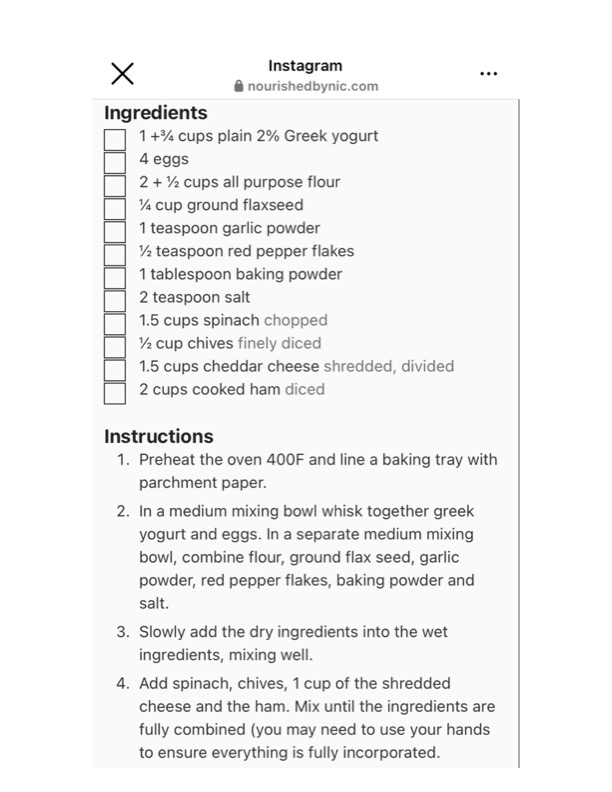

Original cookbook page 580
Ingredients
- LEE ELLE TT
- 1+% cups plain 2% Greek yogurt
- 4 eggs
- 2 + Ye cups all purpose flour
- Y Cup ground flaxseed
- 1 teaspoon garlic powder
- Y. teaspoon red pepper flakes
- 1 tablespoon baking powder
- 2 teaspoon salt
- 1.5 cups spinach chopped
- Ye. cup chives finely diced
- 1.5 cups cheddar cheese shredded, divide
- 2 cups cooked ham diced
Instructions
- Preheat the oven 400F and line a baking tr parchment paper. . Ina medium mixing bow! whisk together g! yogurt and eggs. In a separate medium mi: bowl, combine flour, ground flax seed, gar! powder, red pepper flakes, baking powder salt. . Add spinach, chives, 1 cup of the shreddec cheese and the ham. Mix until the ingredie fully combined (you may need to use your to ensure everything is fully incorporated.
Recipe #580 from collection